Abordare personalizată
Planurile sunt adaptate nevoilor tale, nivelului de mobilitate și obiectivelor de recuperare.
Centru de recuperare · Cluj-Napoca
Te însoțim cu grijă în drumul spre mobilitate și echilibru, prin terapii adaptate nevoilor tale.

Despre VitareiKineto
Mișcarea stă la baza întregii noastre existențe, iar o bună mobilitate ne face nu doar mai sănătoși și mai puternici, dar ne redă și încrederea în sine.
Vitareikineto este un centru terapeutic de restabilire a stării de bine, fie vorba de mobilitatea fizică sau de echilibrul emoțional, prin metode non-invazive și relaxante, care au ca scop creșterea calității vieții.
Credem că fiecare persoană merită un spațiu care oferă siguranță, confort și încredere, pentru a-și regăsi zâmbetul prin diferitele dimensiuni ale stării de bine.
Ne tratăm pacienții așa cum ne-am dori noi înșine să fim tratați!
De ce noi
Fiecare pacient este întâmpinat cu răbdare, empatie și un plan clar, pentru a reveni la o stare de bine reală și durabilă.
Planurile sunt adaptate nevoilor tale, nivelului de mobilitate și obiectivelor de recuperare.
Combinăm terapiile potrivite pentru mobilitate, durere, relaxare și echilibru global.
Un mediu sigur, responsabil și liniștit, în care poți să te simți susținut de la primul pas.
Cu ce te putem ajuta
Fiecare plan începe cu o discuție și o evaluare atentă, pentru a găsi împreună direcția potrivită.
Metoda Reik ineto
Sănătate și echilibru! Bun venit la Centrul VitaReiKineto! Ți-am pregătit un loc deosebit unde echipa noastră te va ajuta să îți consolidezi echilibrul perfect corp-minte-spirit și să ajungi la starea de bine pe care ți-o dorești.
„Cel mai greu lucru de păstrat e echilibrul.” — Jean Grenier
Nu pentru a sublinia dificultatea păstrării echilibrului, ci pentru a-ți oferi sprijin în acest sens. Chiar dacă te simți împlinit, dar parcă lipsește ceva… dacă crezi că ești fericit, dar cauți în continuare fericirea… sau dacă vrei pur și simplu să-ți menții sănătatea, îți oferim un procedeu care să-ți fie alături în atingerea stărilor la care aspiri.
Și iată vestea cea mai bună: majoritatea exercițiilor pe care le înveți la noi pe parcursul acestei metode le poți aplica și acasă!
Dacă vrei să te bucuri de echilibru și sănătate de lungă durată, fă primul pas și programează-te la evaluarea inițială. Evaluarea inițială permite terapeuților noștri să personalizeze parcursul propus conform necesităților tale.
Evaluarea inițială este primul pas important în stabilirea unui plan adecvat.Masajul are rolul de a determina unele reacții vasculare, biochimice și de stimulare senzitivă, în scop profilactic, terapeutic sau recuperator. Acesta are importante beneficii pentru nenumărate afecțiuni.
Durată: 2 săptămâni · Program: 6 ședințe de masaj terapeutic, câte 3 ședințe pe săptămână.
Această etapă presupune folosirea terapiei TECAR, un tip de terapie noninvazivă: Transfer Energetic Capacitiv și Rezistiv. Produce o senzație plăcută de căldură prin transferul curentului electromagnetic de înaltă frecvență prin țesuturile corpului.
Durată: 2 săptămâni · Program: 5 ședințe de terapie TECAR — 3 ședințe în prima săptămână și 2 în a doua săptămână.
Ne axăm pe terapia prin mișcare pentru a-ți îmbunătăți rezistența, mobilitatea și forța, prin programe structurate, adecvate vârstei, stării de sănătate și obiectivelor urmărite.
Durată: 2 săptămâni · Program: 5 ședințe — 3 ședințe în prima săptămână și 2 în a doua săptămână.
Urmărim relaxarea prin meditație și detoxifierea organismului. Ședințele de meditație te ajută să îți consolidezi starea de echilibru; în paralel, vei primi sfaturi pentru o nutriție sănătoasă și pentru detoxifierea organismului.
Durată: 2 săptămâni · Program: 4 ședințe, câte 2 ședințe pe săptămână.
Reiki este o metodă de tratament energetic, născută din practica și experiența maeștrilor japonezi. Conform terapiei Reiki, sănătatea unei persoane este legată în mod direct de echilibrul ei energetic.
Durată: 4 săptămâni · Program: 8 ședințe, câte 2 ședințe pe săptămână.
Pe tot parcursul metodei, terapeuții noștri te vor ghida pentru a-ți consolida starea de sănătate și echilibru, într-o atmosferă de calm și siguranță. Chiar după primele ședințe, mulți pacienți observă o îmbunătățire a mobilității, a senzației de confort și a stării generale.
Abordarea noastră este complementară și nu înlocuiește consultul, diagnosticul sau tratamentul recomandat de un specialist.
Doresc evaluarea inițialăOameni dedicați
În centrul nostru lucrăm cu o echipă dedicată, cu experiență în kinetoterapie și în abordarea individualizată a fiecărui pacient.
Kinetoterapeut
A absolvit specializarea de licență Kinetoterapie și motricitate specială și masteratul Kinetoterapie în afecțiunile aparatului locomotor la Facultatea de Educație Fizică și Sport, Universitatea Babeș-Bolyai.
În activitatea sa, a dezvoltat o abordare integrată în terapiile complementare:
Experiența dobândită în ambele domenii îi permite să abordeze fiecare pacient în mod personal și să ofere soluții de recuperare eficiente, cu efecte pe termen lung.
Tarife
Prețurile noastre sunt revizuite periodic, pentru ca tu să poți alege cu încredere un plan potrivit nevoilor tale.
Galerie
Fotografii ale spațiului, echipamentelor și activităților de recuperare de la VitareiKineto.
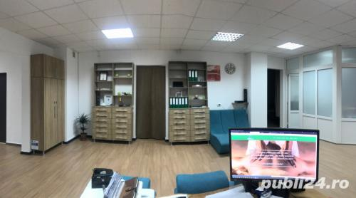
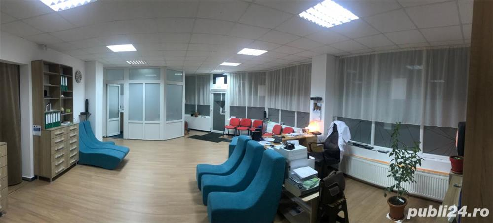
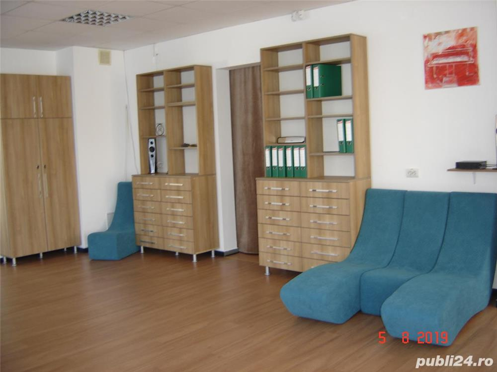
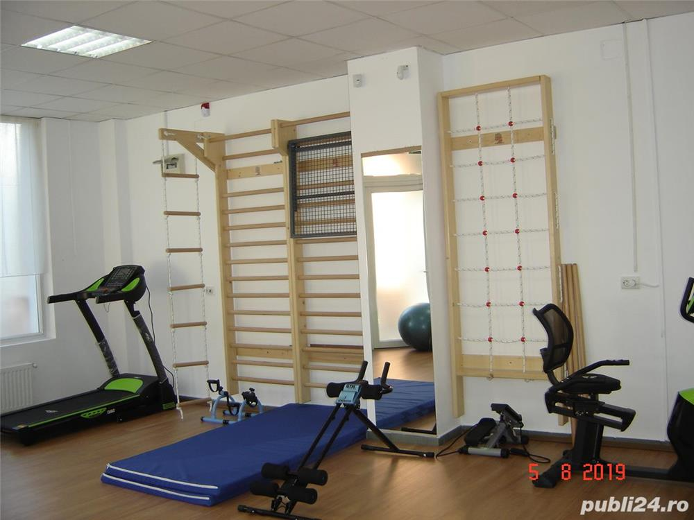
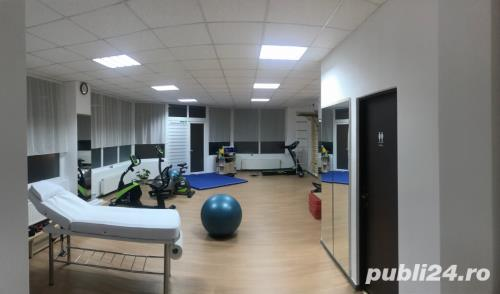
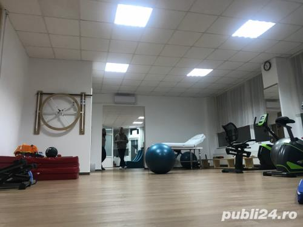
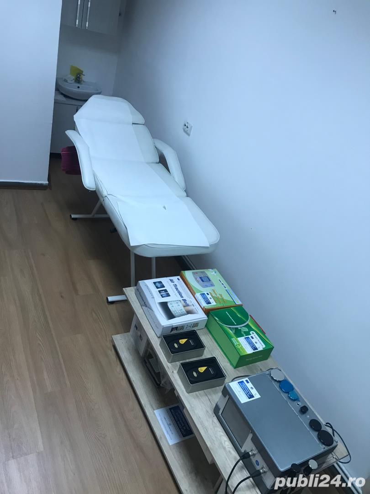
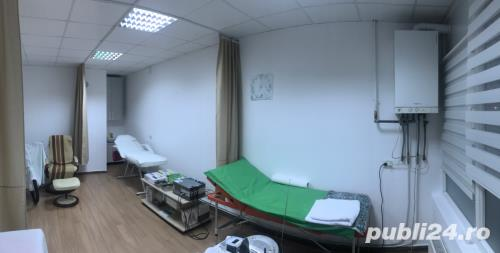
Echipamente
Echipamentele noastre sunt alese pentru a sprijini terapiile moderne și recuperarea funcțională, în condiții sigure și personalizate.
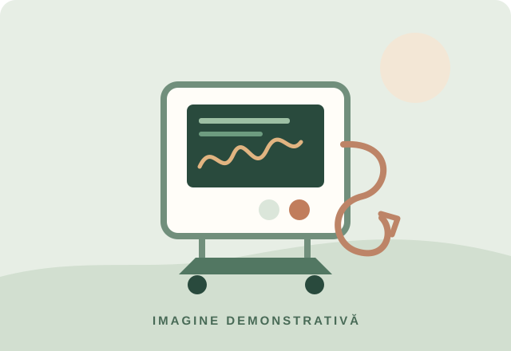
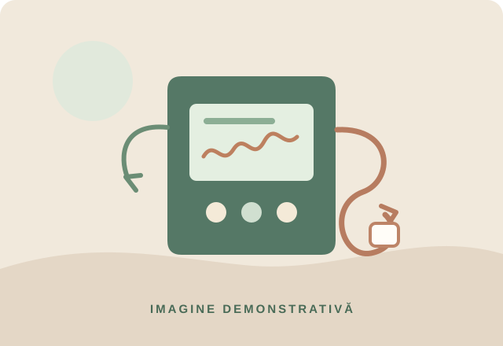
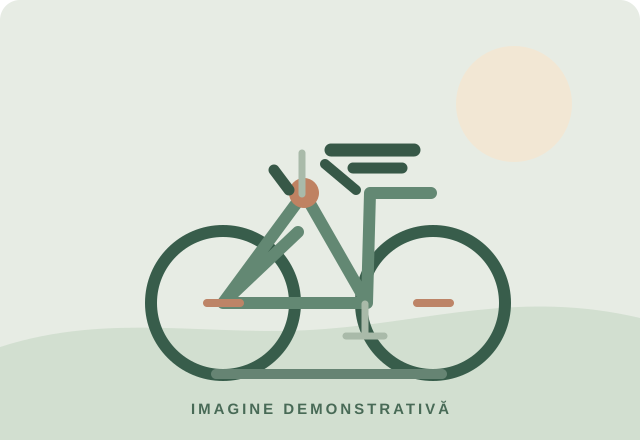
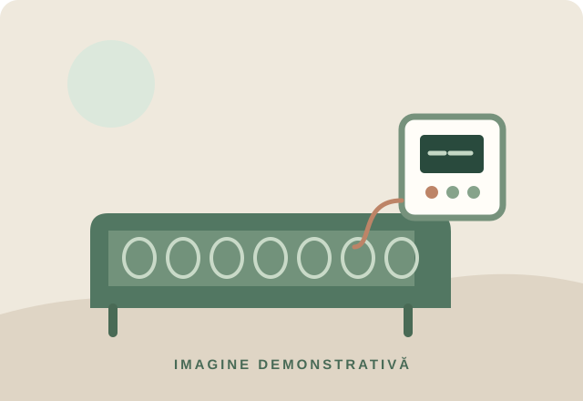
Tehnologie utilizată pentru terapia bioelectrică, acupresură, masaj, termoterapie și stimularea cu câmp magnetic, în funcție de protocolul recomandat.
Aparat digital care utilizează impulsuri electrice joase la frecvențe diferite pentru stimularea musculară și ameliorarea senzației de durere.
Metodă modernă de recuperare bazată pe conversia energiei electromagnetice în căldură aplicată la nivelul țesuturilor, pentru relaxare, reducerea edemului și ameliorarea durerii.
Dispozitiv de susținere pentru zona cervicală, utilizat pentru menținerea unei poziții corecte și diminuarea disconfortului în cazul tensiunilor din coloană.
Solutie de susținere pentru zona lombară, recomandată în anumite situații de tensiune, durere sau spasm muscular, în funcție de evaluarea terapeutului.
Aparat de magnetoterapie cu câmp magnetic pulsatil, folosit în terapii complementare pentru relaxare și restabilirea echilibrului sistemului nervos și muscular.
Saltea terapeutică cu intensitate reglabilă și setări multiple, destinată aplicării terapiilor de relaxare și regenerare generală.
Dispozitive de terapie cu lumină și energie, folosite pentru relaxare și susținerea unui proces de regenerare subtilă.
Echipament de impact redus, potrivit pentru activități de recuperare, tonifiere și susținerea sistemului cardiovascular.
Variantă adaptată pentru o poziție mai confortabilă și pentru reducerea solicitării zonei lombare în timpul exercițiilor.
Echipament folosit în kinetoterapie pentru recuperare locomotorie, susținerea tonusului muscular și menținerea unei activități fizice controlate.
Indicațiile, contraindicațiile și disponibilitatea se verifică împreună cu medicul sau terapeutul și cu centrul.
Experiențe
Abordarea noastră este blândă, atentă și personalizată, pentru ca fiecare persoană să se simtă în siguranță și susținută.
„Am început terapia pentru dureri lombare și am observat o diferență reală după primele săptămâni. Mi s-a oferit un plan clar, calm și eficient.”
„Atmosfera este calmă, foarte primitoare. M-am simțit în siguranță și am văzut îmbunătățiri la mobilitate și la starea generală.”
„Privirea este atentă, iar terapia este adaptată nevoilor mele. A fost un pas bun spre recuperare și pentru revenirea la o viață mai activă.”
Contact
Ai întrebări sau vrei să afli ce serviciu ți se potrivește? Suntem aici să te ajutăm.
Ne găsești
Str. Alverna, nr. 77
Cluj-Napoca
Sună-ne
0745 613 008
0364 882 136
Scrie-ne
contact@vitareikineto.ro